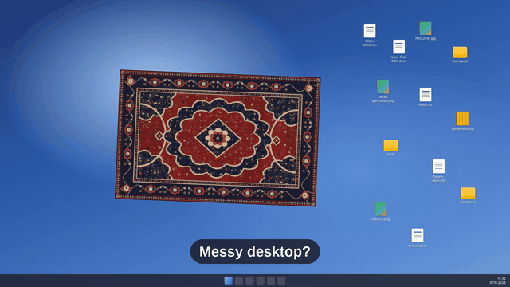
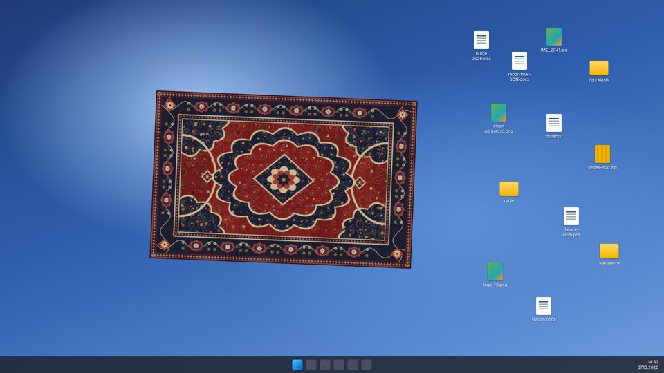
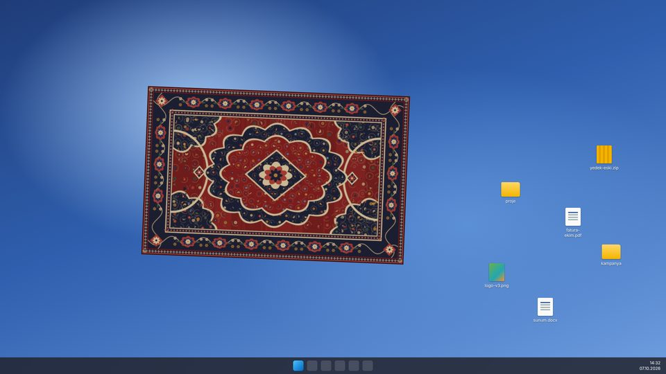
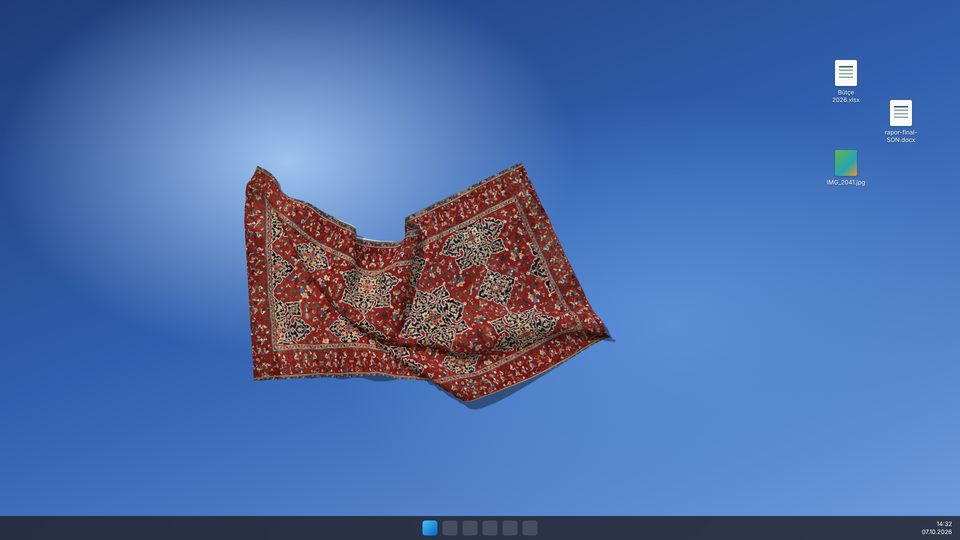
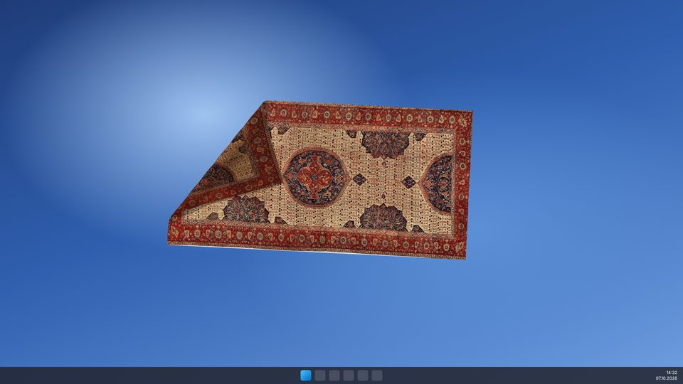

Real cloth physics
Grab the rug anywhere to lift a corner, fold it over itself or crumple it. Double-click to straighten it.
Hide the clutter
Fold a corner back, drop your messy icons underneath, pull the rug over them. Your files are never moved or deleted.
Centuries-old carpets
Five historical Turkish carpets from The Met's open collection, digitally restored — plus our own hand-drawn rug.
Stays out of your way
Clicks pass through to the desktop everywhere except the rug. No account, no ads, no internet, no data collection.
Screenshots




Türkçe
Desktop Rug, Windows masaüstünüze gerçek bir Türk halısı serer. Halı kumaş gibi davranır: köşesini kaldırın, dağınık ikonları altına sürükleyin, halıyı geri çekin — artık görünmüyorlar. Dosyalarınız asla taşınmaz ya da silinmez. Yüzyıllık beş Türk halısı ve kendi çizdiğimiz klasik halı arasından seçim yapabilirsiniz.